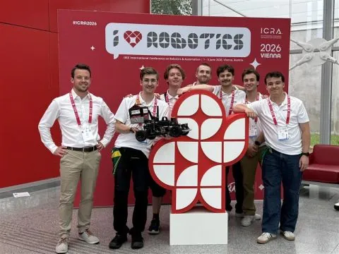

ARCUS is my team building an autonomous racing vehicle for RoboRacer (F1TENTH). We placed 8th in the Classic Cup at RoboRacer ICRA 2026 in Vienna, and we will compete again at RoboRacer ICRA 2027 in Seoul. I implemented
core localization and control algorithms including SLAM for real-time mapping, particle filtering for robust state
estimation, and pure pursuit++ trajectory tracking. The full autonomous driving stack was developed using ROS2 on
a Jetson Orin Nano, enabling real-time perception and decision-making at racing speeds. To see the car in action, take a look at our LinkedIn page.
ARCUS blends autonomous perception, state estimation, and control into a high-speed
racing platform. My focus was on delivering stable localization and smooth trajectory tracking while
keeping the stack real-time and competition-ready. We are a very small team, so I have contributed to almost
every part of the codebase, from perception and localization to planning, control and tooling.
One of the things I developed is a real-time trajectory risk assessment system. Using a local costmap, the
current trajectory is evaluated for potential collisions in real-time with a time-to-collision weighting
scheme. This enables fluid switching between pure pursuit and disparity extender algorithms for dynamic
obstacle avoidance and overtaking. I also built our simulation stack from the ground up (an OpenAI Gym environment with a custom bridge to RViz), which the
team uses to test and validate algorithms in a controlled environment before they run on the car.
Implemented SLAM and particle filtering for robust localization.
Redesigned the particle filter after ICRA 2026: 96% average scan match in early lap tests, with
automatic global relocalization.
Built pure pursuit++ trajectory tracking for high-speed control.
Integrated the full ROS2 autonomy stack on Linux.
Placed 8th in the Classic Cup at RoboRacer ICRA 2026 in Vienna.
Competing next at RoboRacer ICRA 2027 in Seoul.

Team ARCUS at ICRA 2026 in Vienna, 8th in the Classic Cup.Testing and tuning in Kingston.
How a LiDAR scan becomes a steering command. Every stage runs onboard the Jetson
Orin Nano under ROS 2, and the same graph runs against our OpenAI Gym simulator, visualized in RViz through a custom bridge.
01 sense
LiDAR + odometry
Raw laser scans and wheel odometry
02 localize
SLAM + particle filter
Map the track once, then a particle filter (redesigned after ICRA 2026) tracks the pose at speed and relocalizes globally if the car gets lost
03 assess
Trajectory risk
Local costmap with time-to-collision weighting along the current path
04 control
Pure pursuit++ / disparity extender
Switch smoothly between them to avoid obstacles and overtake
Stages I implemented
Lessons from ICRA 2026
Racing in Vienna exposed two weaknesses in our system. Here is what went wrong and
what we changed for Seoul.
/network
Interference from 30+ team networks
Problem
At least 30 teams ran their own networks in the same hall. We streamed visualization over standard
ROS 2 networking (DDS), and the interference added heavy latency to messages, even on the physical
car.
Change
Visualization data now goes over a WebSocket instead of DDS, so it no longer slows down the ROS 2
messages the car depends on.
/localization
A particle filter rebuilt from scratch
Problem
On a large competition track, with several cars around us and an unreliable network, our particle
filter lost accuracy.
Change
I completely redesigned it, drawing on several research papers and on other teams' particle
filters, then adding my own improvements. I also implemented global localization, so the car
relocalizes automatically if it gets lost.
96%average scan match during laps
≥50%scan match at every point of the lap
Early results from testing, not yet measured in competition.
/control
Next for Seoul: MPC and MPPI
Plan
Next, we're experimenting with model predictive control (MPC) and model
predictive path integral (MPPI) controllers for RoboRacer ICRA 2027 in Seoul.